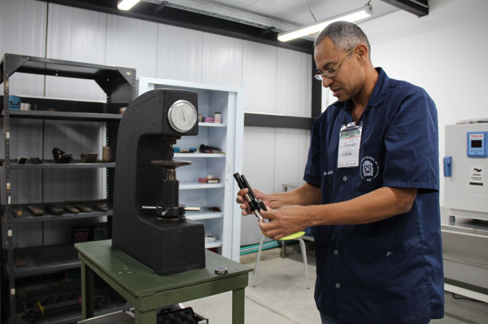

Directorio y capacidades
Conoce los laboratorios
Explora espacios para docencia, investigación y extensión. La facultad es una forma de encontrarlos; también puedes empezar por un servicio.

Selección de fichas para revisar el diseño. El directorio completo se construirá con el inventario validado.
Encuentra un laboratorio por facultad
5 laboratorios en esta muestra
Las fichas de esta muestra, salvo Geotecnia, conducen a fuentes del sitio actual.